건축설비기사 (2018-09-15 기출문제)
1과목: 건축일반
1. 조적구조에 있어서 통줄눈을 피하는 가장 주된 이유는?
- 시공을 쉽게 하기 위해서
- 응력을 분산시키기 위해서
- 외관을 아름답게 하기 위해서
- 토막 벽돌을 이용하기 위해서
(정답률: 86%)

2. 플랫슬래브에서 기둥에 의한 슬래브의 펀칭(뚫림)현상을 방지하는 대책이 아닌 것은?
- 슬래브 두께 증가
- 드롭 판넬 설치
- 기둥 철근량 증가
- 캐피탈 설치
(정답률: 76%)
3. 사무소 건축의 코어(Core) 계획에 관한 설명으로 옳지 않은 것은?
- 전기입상관(EPS) 등은 분산 시켜 외기에 적절히 면하게 한다.
- 위생입상관(PS) 등은 화장실에 접근시켜 배치한다.
- 피난계단이 2개소 이상일 경우에 그 출입구는 적절히 이격하게 한다.
- 코어 내 각 공간이 각층마다 공통의 위치에 있도록 한다.
(정답률: 89%)
4. 도서관 계획 시 기본원칙으로 옳지 않은 것은?
- 소수인원으로 관리할 수 있는 공간계획이 되어야 한다.
- 장래 확장을 고려하지 않고, 여유 공간을 최소화 한다.
- 실의 기능변경 등에 대비한 모듈시스템을 채택한다.
- 이용자와 직원 및 서적의 출입구는 원칙적으로 분리한다.
(정답률: 86%)
5. 실내환기의 주된 목적이 아닌 것은?
- 적절한 산소공급
- 습기 제거
- 기류속도 조정
- CO2 제거
(정답률: 86%)
6. 경사지를 적절하게 이용할 수 있으며, 각 호마다 전용의 정원 확보가 가능한 주택형식은?
- 테라스 하우스(Terrace house)
- 타운 하우스(Town House)
- 중정형 하우스(Patio house)
- 로 하우스(Row house)
(정답률: 77%)
7. 실내조명설계의 순서에서 가장 먼저 수행해야 하는 것은?
- 조명 기구의 디자인
- 소요 조도의 결정
- 조명 방식의 결정
- 기구 대수의 산출
(정답률: 84%)
8. 아파트 단면형식 중 복층형(marionette type)의 특징에 관한 설명으로 옳지 않은 것은?
- 거주성과 프라이버시가 양호하다.
- 소규모에 유리한 형식이 있다.
- 주택내 공간의 변화가 있다.
- 유효면적이 증가한다.
(정답률: 83%)
9. 다음 중 주로 인장력을 부담하는 철물이 아닌 것은?
- 턴버클(turn buckle)
- 폼타이(form tie)
- 앵커볼트(anchor bolt)
- 스터드볼트(stud bolt)
(정답률: 62%)
10. 다음 양식 지붕틀 중 왕대공 지붕틀에 해당하는 것은?
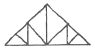
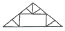
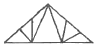
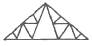
(정답률: 76%)
11. 다음 지붕틀 부재 중 압축응력에 저항하는 부재로만 조합된 것은?
- 층도리, 왕대공
- 지붕보, 달대공
- 빗대공, ㅅ자보
- 평보, 대공
(정답률: 80%)
12. 눈부심(glare)의 방지 방법으로 옳지 않은 것은?
- 휘도가 낮은 광원을 사용한다.
- 플라스틱 커버가 장착된 조명기구를 사용한다.
- 글래어 존(glare zone)에 광원을 설치한다.
- 광원 주위를 밝게 한다.
(정답률: 71%)
13. 상점의 판매형식 중 대면판매의 특징에 관한 설명으로 옳은 것은?
- 상품이 손에 잡혀서 충동적 구매와 선택이 용이하다.
- 진열면적이 커지고 상품에 친근감이 간다.
- 일반적으로 양복, 침구 전기기구, 서적, 운동용구점 등에서 쓰인다.
- 판매원이 정위치를 정하기 용이하다.
(정답률: 73%)
14. 건축의 성립에 영향을 미치는 요소들에 관한 설명으로 옳지 않은 것은?
- 자연 조건이 비슷한 여러 나라가 서로 다른 건축형태를 갖는 것은 기후 및 풍토적 요소 때문이다.
- 지붕의 형태, 경사 등은 기후 및 풍토적 요소의 영향을 받는다.
- 건축재료와 이를 구성하는 방법에 따라 건물의 형태가 변화하는 것은 기술적 요소에서 기인한다.
- 봉건시대에 신을 위한 건축이 주류를 이루고 민주주의 시대에 대중을 위한 학교, 병원 등의 건축이 많아진 것은 정치 및 종교적 요소 때문이다.
(정답률: 76%)
15. 백화점 건축의 에스컬레이터에 관한 설명으로 옳지 않은 것은?
- 엘리베이터보다 설비비가 매우 낮고, 구조계획이 단순하다.
- 엘리베이터보다 수송량이 크다.
- 고객의 시야가 좋고, 고객을 기다리게 하지 않는다.
- 설치 시 층 높이에 대한 고려가 필요하다.
(정답률: 83%)
16. 상점건축 계획에 관한 설명으로 옳지 않은 것은?
- 이용편의를 위하여 고객의 동선을 단순하고 짧게 구성한다.
- 조명은 국부적인 조명과 전반적인 조명을 동시에 고려한다.
- 색채계획은 매장 전체의 분위기와 상품특성을 동시에 고려한다.
- 종업원의 동선은 고객의 동선과 교차되지 않는 것이 바람직하다.
(정답률: 87%)
17. 연면적이 1,000m2인 건물을 2층에서 10층까지 임대할 경우 이 건물의 임대율(유효율)은? (단, 임대율=대실면적/연면적이며, 각 층의 대실면적은 90m2로 동일함)
- 62%
- 72%
- 81%
- 91%
(정답률: 72%)
18. 호텔의 종류 중 연면적에 대한 숙박관계부분의 비율이 일반적으로 가장 큰 것은?
- 아파트먼트 호텔(Apartment hotel)
- 레지던셜 호텔(Residential hotel)
- 리조트 호텔(Resort hotel)
- 커머셜 호텔(Commercial hotel)
(정답률: 67%)
19. 만약 실내공기중의 CO2농도가 1000ppm이라 하면 실내의 공기 중에 CO2 가 차지하는 비율은 몇 %에 해당 하는가?
- 0.01%
- 0.1%
- 1%
- 10%
(정답률: 61%)
20. 병원의 출입구 및 동선계획으로 옳지 않은 것은?
- 외래와 입원환자의 출입구는 분리시킨다.
- 환자와 공급물품의 동선은 중복 또는 교차되지 않도록 한다.
- 야간에는 외래진료부를 폐쇄할 수 있도록 계획한다.
- 입원환자의 보호자 출입구는 외래진료부에 둔다.
(정답률: 74%)
2과목: 위생설비
21. 원심식 펌프로 회전차 주위에 디퓨저인 안내 날개를 가지고 있는 펌프는?
- 터빈펌프
- 기어펌프
- 피스톤펌프
- 볼류트펌프
(정답률: 82%)
22. 먹는물의 수질기준에 따른 경도 기준으로 옳은 것은? (단, 수돗물의 경우)
- 100mg/L를 넘지 아니할 것
- 300mg/L를 넘지 아니할 것
- 1000mg/L를 넘지 아니할 것
- 1200mg/L를 넘지 아니할 것
(정답률: 70%)
23. 급수 관경 결정 시 필요 없는 사항은?
- 수압표
- 관경균등표
- 동시사용율표
- 마찰저항선도
(정답률: 57%)
24. 압력탱크방식 급수법에 관한 설명으로 옳은 것은?
- 취급이 비교적 쉽고 고장도 없다.
- 전력 차단 시에는 사용할 수 없다.
- 항상 일정한 수압을 유지할 수 있다.
- 고가탱크방식에 비하여 관리비용이 저렴하고 저양정의 펌프를 사용한다.
(정답률: 67%)
25. 간접가열식 급탕법에 관한 설명으로 옳지 않은 것은?
- 대규모의 급탕설비에 사용할 수 없다.
- 보일러 내면에 스케일 발생이 적다.
- 탱크 내의 가열코일을 이용하여 가열한다.
- 난방용 보일러를 사용하여 급탕할 수 있다.
(정답률: 70%)
26. 아파트 1동 50세대의 급탕설비를 중앙공급식으로 하는 경우 1시간당 최대 급탕량은? (단, 각 세대마다 세면기(40L/h), 부엌싱크대(70L/h), 욕조(110L/h)가 1개씩 설치되며, 기구의 동시사용률은30%로 가정한다.)(오류 신고가 접수된 문제입니다. 반드시 정답과 해설을 확인하시기 바랍니다.)
- 2700L/h
- 3300L/h
- 3700L/h
- 4300L/h
(정답률: 71%)
27. 다음 중 사이폰 트랩에 속하는 것은?
- P트랩
- 벨트랩
- 드럼트랩
- 그리스트랩
(정답률: 72%)
28. 다음 중 배관의 피복 목적과 가장 관계가 먼 것은?
- 방로
- 방음
- 방동
- 방진
(정답률: 61%)
29. 2개 이상의 엘보를 사용하여 이음부의 나사 회전을 이용해서 배관의 신축을 흡수하는 신축 이음쇠는?
- 루프형
- 슬리브형
- 벨로즈형
- 스위블형
(정답률: 79%)
30. 급탕배관에서 콘크리트벽의 관통 부위에 슬리브(sleeve) 배관을 하는 가장 주된 이유는?
- 관 내의 유속을 낮추기 위하여
- 관의 도장공사를 손쉽게 하기 위하여
- 관 표면에 생기는 결로를 막기 위하여
- 관이 자유롭게 신축할 수 있도록 하기 위하여
(정답률: 78%)
31. 밀폐된 용기에 넣은 유체의 일부에 압력을 가하면, 이 압력은 모든 방향으로 동일하게 전달되어 벽면에 작용한다. 다음 설명에 알맞은 유체 정역학 관련 이론은?
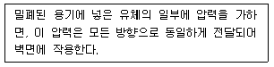
- 파스칼의 원리
- 피토관의 원리
- 베르누이의 정리
- 토리첼리의 정리
(정답률: 71%)
32. 결합통기관에 관한 설명으로 옳은 것은?
- 각 기구마다 설치하는 통기관
- 배수∙통기 양 계통 간의 공기 유통을 원활하게 하기위해 배수수평지관과 루프통기관을 연결시키는 통기관
- 배수수직관의 상부를 그대로 연장하여 대기에 개방되게 한 것으로 배수수직관이 통기관의 역할까지 하도록한 통기관
- 배수수직관이 길 경우 발생할 수 있는 배수수직관 내의 압력변화를 방지하기 위해 배수수직관과 통기수직관을 연결한 통기관
(정답률: 68%)
33. 급수배관 설계 및 시공 시 주의사항으로 옳지 않은 것은?
- 수평배관에서 물이 고일 수 있는 부분에는 진공방지 밸브를 설치한다.
- 상향 급수배관 방식의 경우 진행방향에 따라 올라가는 기울기로 한다.
- 기구의 접속관지름은 기구의 구경과 동일한 것을 원칙으로 하며 이것보다 작게 해서는 안 된다.
- 수직배관에는 25~30m 구간마다 체크밸브를 설치하여 유동 정지시의 역류에너지의 작용을 분산한다.
(정답률: 61%)
34. 대변기의 세정급수 방식 중 하이탱크식과 로우탱크식에 관한 설명으로 옳은 것은?
- 하이탱크식은 로우탱크식보다 세정소음이 작다
- 로우탱크식과 하이탱크식은 연속 사용이 가능하다.
- 로우탱크식은 하이탱크식보다 화장실 내의 공간을 적게 차지하여 유리하다.
- 하이탱크식과 로우탱크식은 탱크로의 급수 수압이 다소 낮아도 사용이 가능하다.
(정답률: 65%)
35. 양수펌프가 수면으로부터 2.5m 높은 지점에 설치되어 있다. 이 때 수온은 32.5℃이고. 32.5℃물의 포화증기압은 5kPa 이며, 수면 위에는 표준 대기압이 작용하고 있다. 이 양수펌프의 유효흡입양정은? (단, 마찰저항은 2.37mAq이며 물의 밀도는 0.996kg/L이다.)
- 약 2.5m
- 약 5.0m
- 약 7.5m
- 약 10.0m
(정답률: 47%)
36. 배수배관에서 청소구의 원칙적인 설치위치에 속하지 않는 것은?
- 배수횡주관 및 배수횡지관의 기점
- 배수수직관의 최상부 또는 그 부근
- 배수횡주관과 부지 배수관의 접속점에 가까운 곳
- 배수관이 45°를 넘는 각도로 방향을 전환 하는 개수
(정답률: 81%)
37. 층류와 난류에 관한 설명으로 옳지 않은 것은?
- 층류영역에서 난류영역 사이를 천이영역이라고 한다.
- 층류에서 난류로 천이할 때의 유속을 평균 유속이라고 한다.
- 레이놀즈 수에 의한 관내의 흐름이 층류인지 난류인지 판별할 수 있다.
- 유체 유동 중 층류는 유체분자가 규칙적으로 층을 이루면서 흐르는 것이다.
(정답률: 70%)
38. 다음 중 펌프에서 캐비테이션 현상의 방지 대책과 가장 거리가 먼 것은?
- 관내에 공기가 체류하지 않도록 배관한다.
- 양정에 필요 이상의 여유를 주지 않도록 한다.
- 흡수관을 가능한 길게 하고 관경을 작게 한다.
- 흡입조건이 나쁜 경우 회전수가 작은 펌프를 사용한다.
(정답률: 80%)
39. 1000L/h의 급탕을 전기온수기를 사용하여 공급 할때 시간당 전력사용량은? (단, 물의 비열 4.2kJ/kg·K, 밀도 1kg/L, 급탕온도 70℃, 급수온도 10℃, 전기온수기의 전열효율은 95%로 한다.)
- 63.4kW/h
- 66.5kW/h
- 70.2kW/h
- 73.7kW/h
(정답률: 40%)
40. 수질에 관한 설명으로 옳은 것은?
- SS값이 클수록 탁도가 작다
- COD값이 클수록 오염도가 작다.
- BOD값이 클수록 오염도가 작다.
- BOD 제거율값이 클수록 처리능력이 양호하다.
(정답률: 72%)
3과목: 공기조화설비
41. 유량조절용으로 사용되며 유체의 흐름방향을 90°로 전환시킬 수 있는 밸브는?
- 볼 밸브
- 앵글 밸브
- 체크 밸브
- 게이트 밸브
(정답률: 80%)
42. 다음 그림과 같은 냉수 배관계통에서 ㉠점의 냉수 순환량은? (단, 펜코일 유닛의 단위는 와트(W)이며, 물의 비열은 4.2kJ/kg∙K, 물의밀도는 1kg/L이다.)
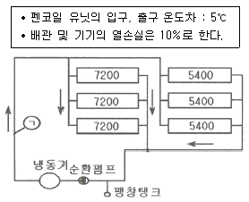
- 약 61L/min
- 약 119L/min
- 약 122L/min
- 약 134L/min
(정답률: 53%)
43. 보일러에 관한 설명으로 옳지 않은 것은?
- 연관 보일러는 예열시간이 길고 수명이 짧다.
- 입형 보일러는 설치면적이 작고 취급이 용이하다.
- 수관 보일러는 지역난방 또는 대형건물에 주로 이용된다.
- 관류 보일러는 보유수량이 많으므로 일반 공조용에 많이 이용된다.
(정답률: 54%)
44. 다음과 같은 특징을 갖는 천장취출구는?
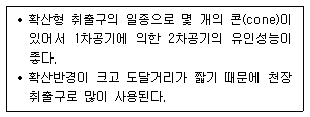
- 팬형
- 노즐형
- 펑커형
- 아네모스탯형
(정답률: 71%)
45. 급기온도를 일정하게 하고 송풍량을 변화시켜서 실내온도를 조절하는 공기조화방식은?
- 냉매방식
- 이중덕트방식
- 정풍량 단일덕트방식
- 변풍량 단일덕트방식
(정답률: 72%)
46. 1인당 소요면적이 5m2이고, 사무실의 면적이 500m2일 때 인체 발생열량은? (단, 1인당 발생 현열량은 56W/인, 잠열량은 46W/인이다.)
- 9400W
- 9900W
- 10000W
- 10200W
(정답률: 66%)
47. 축열시스템에 관한 설명으로 옳지 않은 것은?
- 심야전력의 이용이 가능하다.
- 냉동기의 용량을 감소시킬 수 있다.
- 호텔의 공공부분과 같이 간헐운전이 심한 경우에는 적용할 수 없다.
- 빙축열시스템은 냉각을 위한 냉동기, 축열을 위한 빙축열조, 외부와의 열교환을 위한 열교환기 등으로 구성된다.
(정답률: 73%)
48. 진공환수식 증기난방에서 리프트 피팅(lift fitting)을 해야 하는 경우는?
- 방열기보다 환수주관이 높을 때
- 방열기보다 환수주관이 낮을 때
- 배관 내의 유체 온도가 너무 높을 때
- 배관 내의 유체 온도가 너무 낮을 때
(정답률: 65%)
49. 전열교환가에 관한 설명으로 옳지 않은 것은?
- 공기 대 공기의 열교환기로서, 습도차에 의한 잠열은 교환 대상이 아니다.
- 공기방식의 중앙공조시스템이나 공장 등에서 환기에서의 에너지 회수방식으로 사용된다.
- 공조시스템에서 배기와 도입되는 외기와의 전열교환으로 공조기의 용량을 줄일 수 있다.
- 전열교환기를 사용한 공조시스템에서 중간기(봄, 가을)를 제외한 냉방기와 난방기의 열회수량은 실내∙외의 온도차가 클수록 많다.
(정답률: 61%)
50. 덕트의 치수 결정법에 관한 설명으로 옳지 않은 것은?
- 등속법은 덕트 내의 풍속을 일정하게 유지 할 수 있도록 덕트 치수를 결정하는 방법이다.
- 등마찰손실법은 덕트의 단위길이당 마찰손실이 일정한 상태가 되도록 덕트마찰손실 선도에서 직경을 구하는 방법이다.
- 등속법에 의한 덕트는 각 구간마다 압력 손실이 다르므로 송풍기 용량을 구하기 위해서는 전체 구간의 압력 손실을 구해야하는 번거로움이 있다.
- 등속법에 의한 덕트에 많은 풍량을 송풍하면 소음발생이나 덕트의 강도상에 문제가 발생하므로 일정 풍량이상인 경우 등마찰손실법으로 결정한다.
(정답률: 45%)
51. 사무실 크기가 10m×10m×3m이고 재실자 25명, 가스난로의 CO2 발생량이 0.5m3/h일 때, 실내평균 CO2 농도를 5000ppm으로 유지하기 위한 최소 환기회수는? (단, 재실자 1인당 CO2 발생량은 18L/h, 외기의 CO2 농도는 800ppm 이다.)
- 약 0.75회/h
- 약 1.25회/h
- 약 1.50회/h
- 약 2.00회/h
(정답률: 44%)
52. 증기트랩의 작동원리에 따른 분류 중 기계식 트랩에 속하는 것은?
- 버킷 트랩
- 디스크 트랩
- 벨로즈식 트랩
- 바이메탈식 트랩
(정답률: 50%)
53. 수증기를 만드는 원리에 따라 가습장치를 구분 할 경우, 다음 중 수분무식에 속하는 것은?
- 전열식
- 모세관식
- 초음파식
- 적외선식
(정답률: 67%)
54. 공기조화방식 중 전공기 방식의 일반적인 특징으로 옳은 것은?
- 덕트 스페이스가 필요하다.
- 실내공기의 오염이 심하다.
- 실내에 누수의 염려가 많다.
- 중간기에 외기냉방을 할 수 없다.
(정답률: 67%)
55. 환기방식에 관한 설명으로 옳지 않은 것은?
- 화장실, 주방 등은 제3동 환기가 유리하다
- 상향식 환기는 바닥면의 먼지 등을 일으킬 수 있다.
- 제2종 환기란 급기팬과 배기팬이 모두 설치되는 것을 말한다.
- 국소환기는 주방, 실험실에서와 같이 오염 물질의 확산 및 방산을 가능한 극소화시키려고 할 때 적용된다.
(정답률: 66%)
56. 다음 중 송풍기의 풍량제어 시 축동력이 가장 많이 소요되는 제어방법은?
- 회전수제어
- 흡입베인제어
- 흡입댐퍼제어
- 토출댐퍼제어
(정답률: 66%)
57. 냉동기에 관한 설명으로 옳지 않은 것은?
- 터보식 냉동기는 임펠러의 원심력에 의해 냉매가스를 압축한다.
- 터보식 냉동기는 대용량에서는 압축효율이 좋고 비례제어가 가능하다.
- 압축식 냉동기의 냉매순환 사이클은 압축기→응축기→팽창밸브→증발기이다.
- 흡수식 냉동기는 열에너지가 아닌 기계적 에너지에 의해 냉동효과를 얻는다.
(정답률: 71%)
58. 냉방부하계산에 관한 설명으로 옳지 않은 것은?
- 외벽구조에 따라 상당온도차는 다르게 나타난다.
- 틈새바람에 의한 부하는 현열과 잠열 모두 고려한다.
- 틈새바람량 계산법으로는 틈새법, 면적법, 환기횟수법 등이 있다.
- 유리를 통한 열부하는 일사에 의한 직접 열 취득만을 고려한다.
(정답률: 63%)
59. 다음 중 상당외기온도의 산정과 가장 거리가 먼 것은?
- 외기온도
- 일사의 세기
- 구조체의 열관류율
- 표면재료의 일사흡수율
(정답률: 44%)
60. 습공기선도와 관련된 설명으로 옳지 않은 것은?
- 현열비는 전열량에 대한 현열량의 비율을 의미한다.
- 습공기선도에서 현열비 상태선이 수평일 때 현열비는 1 이다.
- 습공기를 가습하였을 경우 노점온도는 낮아지나 상대 습도는 높아진다.
- 열수분비는 습공기의 상태변화에 따른 전열량의 변화량과 절대습도의 변화량의 비를 나타낸다.
(정답률: 56%)
4과목: 소방 및 전기설비
61. 나무, 섬유, 종이, 고무, 플라스틱류와 같은 일반 가연물이 타고 나서 재가 남는 화재를 의미하는 것은?
- A급 화재
- B급 화재
- C급 화재
- K급 화재
(정답률: 78%)
62. 공동주택 부지 내에서 도시가스 사용시설의 배관을 지하에 매설하는 경우 지면으로부터 최소 얼마 이상의 거리를 유지하여야 하는가?
- 0.3m
- 0.6m
- 0.8m
- 1.2m
(정답률: 57%)
63. 100[Ω]인 전열기가 5대 100[V] 전지에 병렬로 연결되어 있을 때 전열기 1대에서 소비되는 전력은?
- 20[W]
- 40[W]
- 100[W]
- 500[W]
(정답률: 43%)
64. 정보통신설비를 정보설비와 통신설비로 구분 할 경우, 다음 중 정보설비에 속하는 것은?
- 인터폰설비
- TV공청설비
- 홈네트워크설비
- 구내방송(PA)설비
(정답률: 56%)
65. 자속의 단위로 사용되는 것은?
- 헨리[H]
- 패럿[F]
- 클롱[C]
- 웨버[wb]
(정답률: 62%)
66. 가동코일형 계기에 관한 설명으로 옳은 것은?
- 고주파용이다.
- 교류 전용이다.
- 직류 전용이다.
- 직류, 교류 양용이다.
(정답률: 49%)
67. 차동식 분포형 화재감지기에 속하지 않는 것은?
- 스폿식
- 공기관식
- 열전대식
- 열반도체식
(정답률: 60%)
68. 옥내소화전설비에 관한 설명으로 옳지 않은 것은?
- 영하 10℃ 이하의 추운 곳에서의 배관은 습식으로 한다.
- 주배관 중 수직배관의 구경은 50mm 이상의 것으로 한다.
- 방수구는 바닥으로부터 높이가 1.5m 이하가 되도록 한다.
- 건물의 각 부분으로부터 하나의 옥내소화전 방수구까지의 수평거리가 25m 이하가 되도록 한다.
(정답률: 69%)
69. 각종 센서로부터 전자식 신호를 받아 수치화된 디지털 신호로 제어하는 방식은?
- 전기식
- 공기식
- 기계식
- DDC방식
(정답률: 76%)
70. 어느 공장에 주파수60[㎐], 50[kW]인 4극 유도전동기가 운전되고 있다. 이 전동기의 동기속도는?
- 1500[rpm]
- 1800[rpm]
- 2500[rpm]
- 3600[rpm]
(정답률: 59%)
71. 콘덴서에서 극판의 면적을 2배로 증가시키면 정전용량은 몇 배가 되는가?
- 1.5배
- 2배
- 3배
- 4배
(정답률: 52%)
72. 공조설비의 밸브나 댐퍼의 구동을 위하여 비례제어용으로 주로 사용되는 조작기는?
- 히트 펌프
- 서보 모터
- 모듀트럴 모터
- 직동식 전자밸브
(정답률: 61%)
73. 단상 변압기의 2차 무부하 전압이 220[V]이고, 정격부하에서의 2차 단자전압이 200[V]일 경우 전압변동률은?
- 5[%]
- 7[%]
- 10[%]
- 12[%]
(정답률: 68%)
74. 단권 변압기에서 1차 권선의 수가 100회, 공통 코일(2차 코일) 권수가 60회 일 때 2차측 전압은 얼마인가? (단, 1차측 전압은 100[V] 이다.)
- 40[V]
- 60[V]
- 100[V]
- 160[V]
(정답률: 64%)
75. 다음은 옥외소화전설비의 호스접결구에 관한 기준내용이다. ( )안에 알맞은 것은?
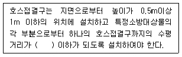
- 30m
- 40m
- 50m
- 60m
(정답률: 61%)
76. 각종 광원에 관한 설명으로 옳지 않은 것은?
- 형광램프는 점등장치를 필요로 한다.
- 저압나트륨램프는 인공광원 중에서 연색성이 가장 우수하다.
- 고압수은램프는 광속이 큰 것과 수명이 긴 것이 특징이다.
- 메탈핼라이드램프는 고압수은램프보다 효율과 연색성이 우수하다.
(정답률: 56%)
77. 평형 3상 교류에서 각 상간의 위상차는?
- 60°
- 90°
- 120°
- 180°
(정답률: 62%)
78. 엘리베이터 설비에서 도어의 안전장치로서 승강장 도어가 열림 상태에서 모든 제약이 풀리면 자동으로 도어가 닫히도록 하는 장치는?
- 도어 머신
- 도어 클로저
- 도어 인터록
- 도어 스위치
(정답률: 61%)
79. 스프링클러설비를 구성하는 배관에 관한 설명으로 옳지 않은 것은?
- 가지배관이란 스프링클러헤드가 설치되어 있는 배관을 말한다.
- 주배관이란 직접 또는 수직배관을 통하여 가지배관에 급수하는 배관을 말한다.
- 급수배관이란 수원 및 옥외송수구로부터 스프링클러헤드에 급수하는 배관을 말한다.
- 신축배관이란 가지배관과 스프링클러헤드를 연결하는구부림이 용이하고 유연성을 가진 배관을 말한다.
(정답률: 57%)
80. 전기 관련 용어에 관한 설명으로 옳지 않은 것은?
- 전력은 열량으로 환산이 가능하다.
- 전류는 단위시간에 이동한 전기량을 말한다.
- 저항의 크기는 물체의 단면적이 비례하고 길이에 반비례한다.
- 전기회로에서 두 극 사이에 생기는 전기적인 고저차를 전위차 또는 전압이라 한다.
(정답률: 66%)
5과목: 건축설비관계법규
81. 다음은 건축법령상 건축신고와 관련된 기준 내용이 다. ( )안에 속하지 않는 것은?
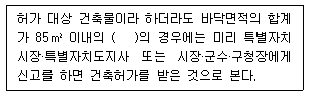
- 신축
- 증축
- 개축
- 재축
(정답률: 69%)
82. 각 층의 거실면적의 합계가 1000m2로 동일한 15층의 문화 및 집회시설 중 공연장에 설치하여야 하는 승용 승강기의 최소 대수는? (단, 15인승 승강기의 경우)
- 4대
- 5대
- 6대
- 7대
(정답률: 47%)
83. 다음 중 축냉식 전기냉방설비의 설계기준 내용으로 옳지 않은 것은?
- 열교환기는 시간당 평균냉방열량을 처리할 수 있는 용량 이하로 설치하여야 한다.
- 자동제어설비는 필요한 경우 수동조작이 가능하도록하여야 하며 감시기능 등을 갖추어야 한다.
- 축열조는 축냉 및 방냉운전을 반복적으로 수행하는데 적합한 재질의 축냉재를 사용하여야 한다.
- 부분축냉방식의 경우에는 냉동기가 축냉운전 또는 냉동기와 축열조의 동시운전이 반복적으로 수행하는데 아무런 지장이 없어야 한다.
(정답률: 69%)
84. 헬리포트의 설치에 관한 기준 내용으로 옳은 것은?
- 헬리포트의 길이와 너비는 각각 9m 이상으로 한다.
- 헬리포트의 중앙부분에는 지름 6m의 “ⓗ” 표지를 황색으로 한다.
- 헬리포트의 주위한계선은 백색으로 하되, 그 선의 너비는 38cm로 한다
- 헬리포트의 중심으로부터 반경 15m 이내에는 이∙착륙에 장애가 되는 건축물 등을 설치하지 아니한다.
(정답률: 67%)
85. 건축물에 설치하는 복도의 유효너비 기준이 옳지 않은 것은? (단, 연면적 200m2를 초과하는 건축물이며, 양옆에 거실이 있는 복도의 경우)
- 초등학교 – 1.8m 이상
- 오피스텔 – 1.8m 이상
- 공동주택 – 1.8m 이상
- 고등학교 – 2.4m 이상
(정답률: 67%)
86. 용도변경과 관련된 시설군 중 영업시설군에 속하지 않는 것은?
- 판매시설
- 운동시설
- 숙박시설
- 교육연구시설
(정답률: 72%)
87. 세대수가 4세대인 주거용 건축물의 급수관 지름의 최소 기준은? (단, 가압설비 등을 설치하지 않은 경우)
- 20mm
- 25mm
- 32mm
- 40mm
(정답률: 56%)
88. 건축물의 에너지절약설계기준상 단열계획에 대한 건축부분의 권장사항으로 옳지 않은 것은?
- 외벽 부위는 내단열로 시공한다
- 외피의 모서리 부분은 열교가 발생하지 않도록 단열재를 연속적으로 설치한다.
- 건물의 창 및 문은 가능한 작게 설계하고, 특히 열손실이 많은 북측 거실의 창 및 문의 면적은 최소화한다.
- 태양열 유입에 의한 냉∙난방부하를 저감할 수 있도록 일사조절장치, 태양열투과율, 창 및 문의 면적비 등을 고려한 설계를 한다.
(정답률: 69%)
89. 지하층의 비상탈출구에 관한 기준 내용으로 옳지 않은 것은?
- 비상탈출구의 문은 피난방향으로 열리도록 할 것
- 비상탈출구는 출입구로부터 3m 이상 떨어진 곳에 설치할 것
- 비상탈출구의 유효너비는 0.75m 이상으로 하고, 유효높이는 1.5m 이상으로 할 것
- 비상탈출구에서 피난층 또는 지상으로 통하는 복도나 직통계단까지 이르는 피난통로의 유효 너비는 0.65m 이상으로 할 것
(정답률: 57%)
90. 다음은 스프링클러설비를 설치하여야 하는 특정 소방대상물에 관한 기준 내용이다. ( )안에 알맞은 것은?
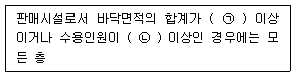
- ㉠ 5000m2, ㉡ 300명
- ㉠ 5000m2, ㉡ 500명
- ㉠ 10000m2, ㉡ 300명
- ㉠ 10000m2, ㉡ 500명
(정답률: 63%)
91. 다음의 소방시설 중 경보설비에 속하지 않는 것은?
- 비상방송설비
- 자동화재속보설비
- 자동화재탐지설비
- 무선통신보조설비
(정답률: 76%)
92. 자동화재탐지설비를 설치하여야 하는 특정 소방대상물에 속하지 않는 것은?
- 장례시설로서 연면적 600m2인 것
- 숙박시설로서 연면적 600m2인 것
- 위락시설로서 연면적 600m2인 것
- 판매시설로서 연면적 600m2인 것
(정답률: 55%)
93. 공동주택에서 환기를 위하여 거실에 설치하는 창문 등의 면적은 그 거실의 바닥면적의 최소 얼마 이상이어야 하는가? (단, 기계환기장치 및 중앙관리방식의 공기 조화설비를 설치하지 않은 경우)
- 10분의 1
- 20분의 1
- 30분의 1
- 50분의 1
(정답률: 57%)
94. 다음은 피난안전구역에 관한 기준 내용이다. ( ) 안에 알맞은 것은?
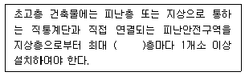
- 15개
- 20개
- 30개
- 40개
(정답률: 76%)
95. 종교시설의 용도에 쓰이는 건축물의 집회실로서 그 바닥면적이 200m2 이상인 경우 반자의 높이는 최소 얼마 이상으로 하여야 하는가? (단, 기계환기장치를 설치하지 않는 경우)
- 2.1m
- 2.4m
- 3m
- 4m
(정답률: 64%)
96. 건축법령상 제1종 근린생활시설에 속하지 않는 것은?
- 미용원
- 치과의원
- 마을회관
- 일반음식점
(정답률: 69%)
97. 건축법령상 다음과 같이 정의되는 용어는?
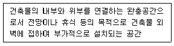
- 노대
- 차양
- 테라스
- 발코니
(정답률: 62%)
98. 건축물의 피난층 외의 층에서 피난 또는 지상으로 통하는 직통계단을 설치할 경우, 거실의 각 부분으로부터계단에 이르는 보행거리가 원칙적으로 최대 얼마 이하가 되도록 설치하여야 하는가? (단, 거실로부터 가장 가까운 거리에 있는 계단의 경우)
- 5m
- 10m
- 20m
- 30m
(정답률: 48%)
99. 방염성능기준 이상의 실내장식물 등을 설치하여야 하는 특정소방대상물에 속하지 않는 것은?
- 수영장
- 숙박시설
- 의료시설 중 종합병원
- 방송통신시설 중 방송국
(정답률: 76%)
100. 건축물에 급수∙배수∙환기∙난방 등의 건축설비를 설하는 경우 건축기계설비기술사 또는 공조냉동기계기술사의 협력을 받아야 하는 대상 건축물에 속하지 않는 것은?
- 아파트
- 연립주택
- 숙박시설로서 해당 용도에 사용되는 바닥면적의 합계가 2000m2인 건축물
- 판매시설로서 해당 용도에 사용되는 바닥면적의 합계가 2000m2인 건축물
(정답률: 54%)